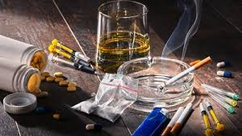

Bahaya Narkoba

Narkoba adalah singkatan dari narkotika dan obat/bahan berbahaya. Selain "narkoba", istilah lain yang diperkenalkan khususnya oleh Kementerian Kesehatan Republik Indonesia adalah Napza yang merupakan singkatan dari narkotika, psikotropika, dan zat adiktif. Narkotika adalah zat atau obat yang berasal dari tanaman atau bukan tanaman, baik sintetis maupun semi sintetis yang dapat menyebabkan penurunan atau perubahan kesadaran, hilangnya rasa nyeri dan dapat menimbulkan ketergantungan (Undang-Undang No. 35 tahun 2009).
Bahaya narkoba akan mempengaruhi fisik, psikologis, maupun lingkungan social:
1) Bahaya narkoba terhadap fisik
- Gangguan pada system syaraf (neurologis)
- Gangguan pada jantung dan pembuluh darah (kardiovaskuler)
- Gangguan pada kulit (dermatologis)
- Gangguan pada paru-paru (pulmoner)
- Sering sakit kepala, mual-mual dan muntah, murus-murus, suhu tubuh meningkat, pengecilan hati dan insomnia
- Gangguan terhadap kesehatan reproduksi yaitu gangguan padaendokrin, seperti: penurunan fungsi hormon reproduksi (estrogen, progesteron, testosteron), serta gangguan fungsi seksual.
- Gangguan terhadap kesehatan reproduksi pada remaja perempuan antara lain perubahan periode menstruasi, ketidakteraturan menstruasi, dan amenorhoe (tidak haid)
- Bagi pengguna narkoba melalui jarum suntik, khususnya pemakaian jarum suntik secara bergantian, risikonya adalah tertular penyakit seperti hepatitis B, C, dan HIV
- Bahaya narkoba bisa berakibat fatal ketika terjadi over dosis yaitu konsumsi narkoba melebihi kemampuan tubuh untuk menerimanya. Over dosis bisa menyebabkan kematian.
2) Bahaya narkoba terhadap psikologi
- Kerja lamban dan seroboh, sering tegang dan gelisah
- Hilang rasa percaya diri, apatis, pengkhayal, penuh curiga
- Agitatif, menjadi ganas dan tingkah laku yang brutal
- Sulit berkonsentrasi, perasaan kesal dan tertekan
- Cenderung menyakiti diri, perasaan tidak aman, bahkan bunuh diri.
3) Bahaya narkoba terhadap lingkungan sosial
- Gangguan mental
- Anti-sosial dan asusila
- Dikucilkan oleh lingkungan
- Merepotkan dan menjadi beban keluarga
- Pendidikan menjadi terganggu dan masa depan suram.
Berikut adalah bahaya narkoba sesuai jenisnya:
1) Opioid:
- Depresi berat
- Apatis, gugup dan gelisah
- Banyak tidur, rasa lelah berlebihan
- Malas bergerak, kejang-kejang, dan denyut jantung bertambah cepat
- Selalu merasa curiga, rasa gembira berlebihan, rasa harga diri meningkat
- Banyak bicara namun cadel, pupil mata mengecil
- Tekanan darah meningkat, berkeringat dingin
- Mual hingga muntah
- luka pada sekat rongga hidung
- Kehilangan nafsu makan, turunnya berat badan
2) Kokain
- Denyut jantung bertambah cepat
- Gelisah, banyak bicara
- Rasa gembira berlebihan, rasa harga diri meningkat
- Kejang-kejang, pupil mata melebar
- Berkeringat dingin, mual hingga muntah
- Mudah berkelahi
- Pendarahan pada otak
- Penyumbatan pembuluh darah
- Pergerakan mata tidak terkendali
- Kekakuan otot leher
3) Ganja
- Mata sembab, kantung mata terlihat bengkak, merah, dan berair
- Sering melamun, pendengaran terganggu, selalu tertawa
- Terkadang cepat marah
- Tidak bergairah, gelisah
- Dehidrasi, liver
Tulang gigi keropos
- Saraf otak dan saraf mata rusak
- Skizofrenia
4) Ectasy
- Enerjik tapi matanya sayu dan wajahnya pucat, berkeringat
- Sulit tidur
- Kerusakan saraf otak
- Dehidrasi
- Gangguan liver
- Tulang dan gigi keropos
- Tidak nafsu makan
- Saraf mata rusak.
5) Shabu-shabu:
- Enerjik
- Paranoid
- Sulit tidur
- Sulit berfikir
- Kerusakan saraf otak, terutama saraf pengendali pernafasan hingga merasa sesak nafas
- Banyak bicara
- Denyut jantung bertambah cepat
- Pendarahan otak
- Shock pada pembuluh darah jantung yang akan berujung pada kematian.